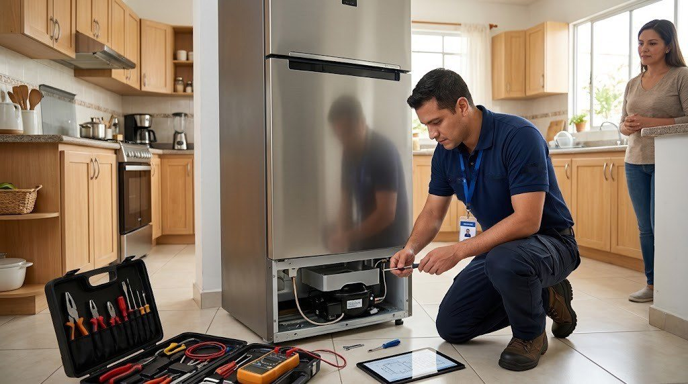
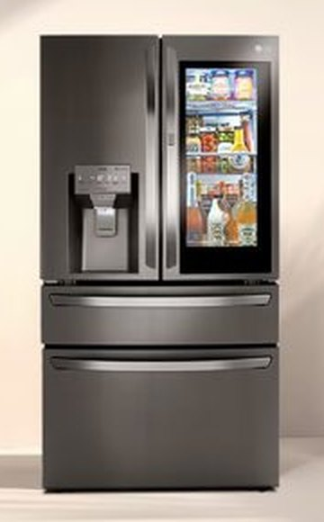

Servicio técnico de neveras LG en Panamá
Reparamos neveras y refrigeradoras LG a domicilio en Ciudad de Panamá: de dos puertas (Side by Side), French Door, de congelador superior o inferior y modelos con dispensador de agua y hielo.

Qué neveras LG reparamos

- Side by Side (dos puertas verticales)
- French Door (puertas dobles arriba y cajón de congelador abajo)
- Congelador superior (Top Mount)
- Congelador inferior (Bottom Mount)
- Modelos con dispensador de agua y fábrica de hielo
- Modelos con compresor inverter
Cómo trabajamos en la nevera LG
Revisamos el equipo en tu casa, te explicamos la falla y el costo antes de empezar y reparamos con garantía sobre la pieza y la mano de obra.
Fallas comunes de neveras LG y su causa probable
Estas son las que más vemos en Panamá. Si tu equipo tiene otro síntoma, escríbenos.
| Síntoma | Causa probable | Urgencia |
|---|---|---|
| La nevera no enfría | Falla del ventilador del evaporador, escarcha que tapa la circulación de aire, sensor de temperatura, tarjeta de control o compresor. | Urgente |
| El congelador se llena de escarcha | Falla del sistema de descongelación (resistencia, termostato de deshielo o tarjeta), o empaque de la puerta que no sella. | Revisar pronto |
| Gotea agua dentro de la nevera | Desagüe de descongelación tapado o congelado, o bandeja de drenaje en mal estado. | Revisar pronto |
| Hace ruido o zumbido fuerte | Ventilador con hielo o desgastado, compresor que arranca con dificultad, o la nevera mal nivelada. | Revisar pronto |
| El dispensador no saca agua | Filtro de agua vencido, manguera congelada o válvula de entrada de agua. | Vigilar |
| No hace hielo o hace poco | Fábrica de hielo congelada, válvula de agua, sensor o temperatura del congelador fuera de rango. | Vigilar |
| Se enciende la luz del filtro o suena una alarma | Aviso de cambio de filtro o puerta que no cierra bien. | Vigilar |
| Se apaga y prende sola, o salta el breaker | Variaciones de voltaje, compresor con falla de arranque o tarjeta de control. | Urgente |
| Huele mal por dentro | Alimentos derramados, drenaje sucio o filtro de olores saturado. | Vigilar |
| La puerta InstaView no se ilumina | LED o iluminación de la ventana con falla, sensor de toque, modo de bloqueo o tarjeta de control. | Vigilar |
| La nevera LG muestra un código de error en el panel | Falla de ventilador, sensor de descongelación o comunicación entre tarjetas. | Revisar pronto |
| El compresor hace ruido de arranque o vibra | Compresor inverter, nevera desnivelada o contacto con la pared. | Revisar pronto |
Todo sobre la nevera LG
Más sobre neveras LG
Fallas de neveras LG
Neveras LG por zona
Guías sobre neveras LG
Nevera LG no enfría: causas y qué revisar
Si tu nevera LG no enfría o enfría poco, estas son las causas más comunes y qué puedes revisar antes de llamar.
Leer →Escarcha en el congelador de la nevera LG: por qué pasa
Por qué se forma escarcha en el congelador, cuándo es normal y cuándo indica una falla de descongelación.
Leer →Cortes de luz y variaciones de voltaje: cómo proteger tus electrodomésticos
Los picos de voltaje y los cortes de luz dañan tarjetas y compresores. Cómo protegerte.
Leer →Servicio técnico de neveras y refrigeradoras LG en Panamá
Si tu nevera LG dejó de enfriar, hace ruido, forma escarcha o el dispensador de agua no funciona, nuestro técnico de refrigeradoras LG va a tu casa en Panamá para revisarla. Atendemos neveras LG French Door, Door-in-Door, InstaView, Side by Side, de congelador superior e inferior, con o sin dispensador de agua y hielo.
Reparación de neveras LG InstaView y Door-in-Door
Las neveras LG con puerta InstaView (la que se ilumina al tocar dos veces) y con Door-in-Door tienen más componentes electrónicos: panel, sensores, iluminación LED y tarjetas. Revisamos que la puerta InstaView encienda, que los sellos de la puerta interna cierren bien y que el panel responda. Si tu nevera LG muestra un código en la pantalla, escríbenos el modelo y el código.
Fallas de refrigeradoras LG con compresor inverter
Las neveras LG con compresor Smart Inverter y Linear Cooling son más silenciosas, pero pueden presentar falta de frío, ruido de arranque, escarcha en el congelador o ciclos de enfriamiento muy largos. Verificamos ventiladores del evaporador, sensores de temperatura, resistencia de descongelación, tarjeta de control y compresor antes de proponer la reparación.
Dispensador de agua y fábrica de hielo LG
El dispensador puede fallar por filtro de agua vencido, manguera congelada o válvula de entrada de agua. También atendemos la fábrica de hielo que no produce o produce poco. En Panamá revisamos el sistema de agua completo y te explicamos qué pieza hay que cambiar.
¿Cuánto cuesta reparar una nevera LG en Panamá?
El costo depende de la falla, la pieza y el modelo. Te confirmamos el valor de la visita antes de ir y el de la reparación antes de empezar. Si la nevera LG es muy antigua y la reparación no conviene, te lo decimos con claridad.
Preguntas frecuentes
¿Cuánto tarda una reparación de nevera LG?
Depende de la falla. Muchas reparaciones se hacen en la misma visita; si hay que conseguir una pieza, te avisamos el plazo antes de empezar.
¿Reparan neveras Side by Side y French Door?
Sí. Atendemos neveras LG de dos puertas, French Door y de congelador superior o inferior.
¿Por qué mi nevera LG no enfría pero el congelador sí?
Normalmente el aire frío no está llegando a la parte de abajo: ventilador, escarcha o sensor. Es una de las fallas más comunes.
¿Cada cuánto debo cambiar el filtro de agua?
Cada 6 meses, o antes si el agua sale lenta o con mal sabor.
¿Vale la pena reparar una nevera vieja?
Si la falla es de una pieza accesible, casi siempre sí. Si el compresor está dañado y el equipo es muy viejo, te explicamos las opciones con honestidad.
¿Trabajan con garantía?
Sí, cada reparación incluye garantía sobre la pieza y la mano de obra; el plazo se confirma antes de empezar.
¿Reparan neveras LG InstaView y Door-in-Door?
Sí, atendemos neveras LG con puerta InstaView, Door-in-Door, French Door, Side by Side y de congelador superior o inferior.
¿Qué significa un código de error en mi nevera LG?
Suele indicar falla de un ventilador, un sensor o la comunicación entre tarjetas. Escríbenos el modelo y el código y te orientamos.
¿Tu nevera LG tiene una falla?
Escríbenos por WhatsApp con el equipo, el modelo y la falla. Te confirmamos disponibilidad para tu zona en minutos.